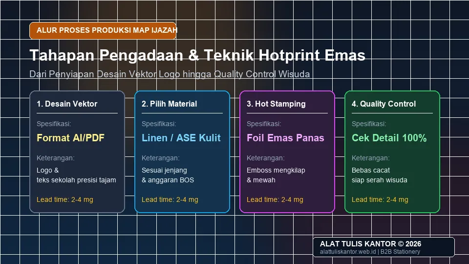

Map ijazah custom dengan hotprint emas menjadi elemen penting dalam momen kelulusan siswa, memberikan kesan formal dan berkesan saat dokumen ijazah diserahkan pada acara wisuda atau pelepasan siswa. Namun, banyak kepala sekolah dan panitia kelulusan masih bingung mengenai proses pengadaan ATK sekolah untuk map ijazah custom ini, mulai dari cara penyiapan desain logo vektor, teknik cetak hotprint foil, hingga estimasi biaya yang wajar untuk dianggarkan dari dana sekolah.
Artikel ini membahas panduan lengkap pengadaan map ijazah sekolah custom dengan hotprint emas, mulai dari alur proses produksi hingga tips memilih vendor terpercaya yang tepat waktu. ATK Prima Distribusi menyediakan layanan cetak map ijazah custom berkualitas tinggi untuk jenjang PAUD, SD, SMP, SMA, hingga perguruan tinggi. Konsultasi pengadaan dapat dilakukan via WhatsApp di 0889-8964-3555.
Standar Dokumen Berharga: Map ijazah bukan sekadar sampul kertas biasa, melainkan media proteksi arsip vital siswa seumur hidup. Material yang dipilih harus bebas asam (acid-free) dan tahan kelembapan agar lembar ijazah tidak menempel atau rusak seiring waktu.
Ringkasan Pengadaan Map Ijazah Custom Hotprint Emas
Pengadaan map ijazah sekolah custom dengan hotprint emas melibatkan empat tahap utama:
- Penentuan desain logo dan tata letak yang akan dicetak dalam format vektor presisi.
- Pemilihan bahan map (kertas linen, karton art paper, atau kulit sintetis ASE) yang sesuai dengan kesan formal yang diinginkan.
- Proses hotprint atau emboss emas pada logo, nama sekolah, dan ornamen sudut sampul.
- Quality control menyeluruh sebelum map didistribusikan ke seluruh siswa saat prosesi kelulusan.
Proses produksi umumnya membutuhkan waktu 2–4 minggu tergantung volume pesanan, sehingga pihak sekolah perlu merencanakan pemesanan jauh sebelum jadwal wisuda tiba.
Mengapa Map Ijazah Custom Penting untuk Momen Kelulusan
Map ijazah yang polos tanpa identitas sekolah cenderung terlihat kurang istimewa untuk momen kelulusan yang seharusnya menjadi puncak prestasi belajar siswa. Map custom dengan logo sekolah dan hotprint emas memberikan sentuhan visual formal dan profesional yang mencerminkan martabat institusi pendidikan.
Selain sebagai wadah pelindung dokumen legalitas pendidikan, map custom juga berfungsi sebagai cinderamata kebanggaan alumni yang disimpan selama puluhan tahun. Penerapan standar map ijazah yang representatif termasuk dalam prinsip tata kelola pengadaan ATK untuk sekolah dan kampus yang bermutu.
Proses Pengadaan Map Ijazah Custom Hotprint Emas
1. Penentuan Desain Logo dan Tata Letak
Siapkan file logo sekolah dalam format vektor (.AI, .CDR, .EPS, atau .PDF vektor) agar hasil pembuatan matras logam cetak hotprint tetap tajam tanpa pecah pixel. Tentukan komposisi layout, apakah logo diletakkan di tengah simetris, pojok atas, atau dikombinasikan dengan teks nama yayasan, NPSN, nama sekolah, serta tahun ajaran kelulusan.
2. Pemilihan Bahan Map
Bahan map yang umum digunakan antara lain kertas linen bertekstur, kulit sintetis ASE (leatherette), atau karton tebal dilapisi laminasi doff art paper. Setiap bahan memiliki karakteristik ketahanan dan tampilan yang berbeda, dengan kulit sintetis memberikan kesan paling premium untuk jenjang menengah atas dan universitas.
3. Proses Hotprint atau Emboss Emas
Hot stamping adalah teknik mencetak menggunakan lempeng klise logam panas dan lembaran foil emas (gold foil) yang dipres ke permukaan map, menghasilkan kilau keemasan elegan yang tidak luntur tergesek. Teknik ini dapat dikombinasikan dengan efek deboss/emboss timbul untuk kedalaman tekstur maksimal.
4. Quality Control Sebelum Distribusi
Setiap unit map yang selesai dicetak harus diperiksa satu per satu oleh tim panitia untuk memastikan foil emas menempel merata, sudut siku siku terpasang kencang (corner protector brass), dan mika plastik selipan ijazah bagian dalam terpasang rapi tanpa kerutan.

Pilihan Bahan dan Karakteristik Map Ijazah
Memahami ragam material membantu panitia menyesuaikan spesifikasi teknis dengan alokasi anggaran dana BOS maupun komite sekolah:
- Karton Tebal + Art Paper Laminasi: Pilihan paling ekonomis dengan cover cetak full color dilapisi laminasi doff dan aksen hotprint logo emas di bagian depan.
- Kertas Linen Bertekstur (Exclusive Linen): Memiliki tekstur serat kain alami yang mewah, ringan, dan sangat kuat menyerap lekat lembaran foil emas.
- Kulit Sintetis ASE / PVC Leatherette: Menggunakan busa tipis empuk di dalamnya, dijahit atau dipres tepi (high-frequency welding), anti air, dan memberikan daya tahan terbaik puluhan tahun.
Teknik Hotprint dan Emboss Foil Emas
Untuk memastikan hasil cetak logo sekolah tampak memukau, vendor profesional menggunakan klise tembaga (copper block) atau magnesium yang dipanaskan pada suhu terukur 110–130°C. Foil emas berkualitas tinggi (grade A) tidak akan mengelupas atau pudar menjadi kehitaman meskipun disimpan di ruangan ber-AC maupun suhu tropis.
Tabel Estimasi Biaya Map Ijazah Custom Berdasarkan Bahan
| Jenis Bahan Map | Karakteristik & Tampilan | Estimasi Harga per Unit | Rekomendasi Jenjang |
|---|---|---|---|
| Karton + Art Paper | Ekonomis, full color cover, cukup formal | Rp 15.000 – Rp 25.000 | PAUD, TK & SD |
| Kertas Linen Bertekstur | Kesan premium, tekstur serat kain, tahan lama | Rp 25.000 – Rp 40.000 | SMP & MTs |
| Kulit Sintetis (ASE Leatherette) | Paling premium, tebal empuk, tahan air & elegan | Rp 40.000 – Rp 70.000 | SMA, SMK & Perguruan Tinggi |
Tips Memilih Vendor Cetak Map Ijazah yang Tepat
- Minta sampel fisik (sample proof): Evaluasi kerapian hasil hotprint emas, ketebalan karton, dan presisi siku logam sebelum menerbitkan SPK (Surat Perintah Kerja).
- Pastikan buffer waktu pengiriman: Pilih vendor yang mampu menyelesaikan pesanan minimal 1–2 minggu sebelum tanggal wisuda guna mengantisipasi kendala logistik.
- Klarifikasi kebijakan revisi: Pastikan penyedia memberikan digital mock-up approval sebelum proses pembuatan klise cetak permanen dimulai.
- Bandingkan kelengkapan legalitas dan faktur: Pastikan vendor menyediakan kuitansi resmi dan faktur pajak sesuai regulasi belanja dana pendidikan.
Cara Menghitung Kebutuhan dan Anggaran Map Ijazah
Perhitungan anggaran yang akurat mencegah kekurangan stok saat hari wisuda:
- Hitung jumlah siswa definitif: Ambil data nominasi tetap peserta ujian akhir dari bagian tata usaha sekolah.
- Tambahkan buffer cadangan 5–10%: Cadangan ini mutlak diperlukan jika terjadi kesalahan penulisan nama, kerusakan fisik dokumen, atau kebutuhan arsip legalisasi perpustakaan.
- Sesuaikan bahan dengan plafon dana: Alokasikan anggaran dari pos belanja operasional atau paket kelulusan komite sekolah secara transparan.
Studi Kasus: Kesan Berkesan Wisuda SMA Bintang Harapan
SMA Bintang Harapan sebelumnya menggunakan map ijazah polos tanpa identitas khusus untuk acara wisuda tahunan mereka guna menghemat waktu pengadaan. Namun, pada evaluasi acara, banyak wali murid merasa dokumen kelulusan terasa kurang berbobot untuk momen penutupan studi 3 tahun.
Setelah beralih menggunakan map custom kulit sintetis hotprint emas lengkap dengan logo sekolah timbul dan sudut siku ornamen kuningan, suasana prosesi penyerahan ijazah menjadi jauh lebih khidmat. Sekolah menerima banyak apresiasi positif dari orang tua siswa dan alumni. Kini, map custom hotprint telah menjadi standar baku tahunan sekolah tersebut.
Peningkatan Citra Sekolah: Map ijazah custom hotprint emas meningkatkan prestise institusi di mata masyarakat dan memperkuat kebanggaan almamater bagi lulusan baru saat melanjutkan ke jenjang perguruan tinggi.
Tips Menyimpan Map Ijazah Sebelum Hari Wisuda
Setelah map ijazah tiba dari percetakan, terapkan panduan penyimpanan berikut agar kualitasnya terjaga prima:
- Simpan di ruangan yang sejuk, kering, dan berventilasi baik dengan suhu stabil.
- Bahan kulit sintetis (ASE) dapat berjamur jika disimpan di ruangan lembap; gunakan silica gel di dalam kardus penyimpanan.
- Gunakan sekat kertas tisu tipis antarsampul map agar lapisan foil emas tidak saling bergesekan atau tergores saat ditumpuk.
- Lakukan inspeksi acak 3 hari sebelum acara wisuda untuk memastikan semua map siap dibagikan tanpa cacat produksi yang terlewat.
Cara Memesan Map Ijazah Custom untuk Sekolah Anda
Untuk konsultasi spesifikasi desain dan pemesanan map ijazah custom hotprint emas sekolah, kunjungi halaman layanan pengadaan ATK sekolah kami atau cek katalog lengkap di halaman semua produk ATK dan paket terpadu di paket pengadaan.
Pelajari profil perusahaan dan legalitas distribusi kami di halaman Tentang Kami sebelum menyusun proposal pengadaan wisuda bersama komite sekolah atau yayasan.
Pertanyaan yang Sering Diajukan (FAQ)
Kesimpulan
Pengadaan map ijazah custom dengan hotprint emas dapat memberikan kesan formal dan berkesan bagi momen kelulusan siswa, asalkan direncanakan dengan matang mulai dari desain vektor logo, pemilihan bahan yang tepat, hingga tenggat waktu produksi yang aman. Dengan perencanaan yang cermat, sekolah dapat menghadirkan pengalaman wisuda yang lebih istimewa bagi seluruh civitas akademika tanpa kendala teknis.
Butuh map ijazah custom hotprint emas untuk acara kelulusan sekolah Anda? Hubungi tim ATK Prima Distribusi via WhatsApp di 0889-8964-3555, pengiriman aktif dan terpercaya se-Jabodetabek dan seluruh Indonesia.